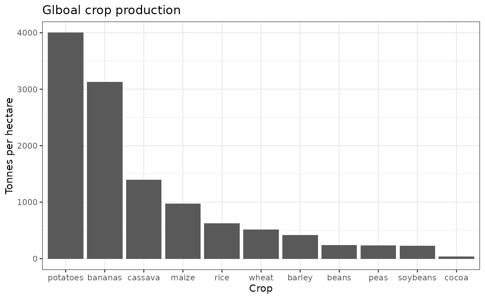
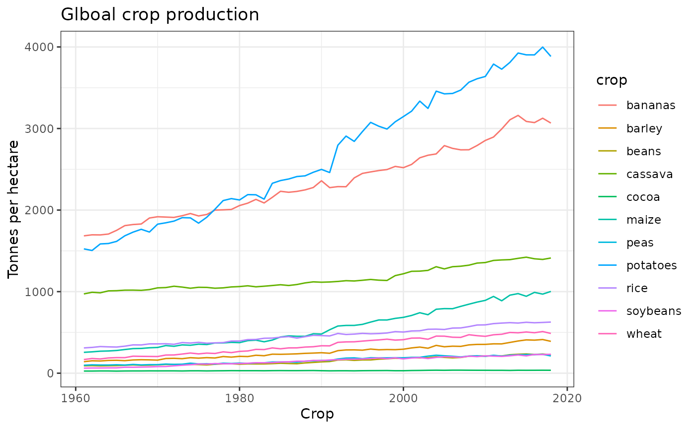

library(cwdata)
library(tidyverse)
#> ── Attaching packages ─────────────────────────────────────── tidyverse 1.3.1 ──
#> ✔ ggplot2 3.3.5 ✔ purrr 0.3.4
#> ✔ tibble 3.1.5 ✔ dplyr 1.0.7
#> ✔ tidyr 1.1.4 ✔ stringr 1.4.0
#> ✔ readr 2.0.2 ✔ forcats 0.5.1
#> ── Conflicts ────────────────────────────────────────── tidyverse_conflicts() ──
#> ✖ dplyr::filter() masks stats::filter()
#> ✖ dplyr::lag() masks stats::lag()
key_crop_yields %>%
filter(year == 2017) %>%
group_by(crop) %>%
summarise(tonnes_per_hectare = sum(tonnes_per_hectare, na.rm = T)) %>%
ggplot(aes(x = forcats::fct_reorder(crop, tonnes_per_hectare, .desc = T),
y = tonnes_per_hectare)) +
geom_col()+
theme_bw()+
labs(
y = "Tonnes per hectare",
x = "Crop",
title = "Glboal crop production"
) The most produced crop in the world is potatoes! Has this always been the case?
key_crop_yields %>%
group_by(year, crop) %>%
summarise(tonnes_per_hectare = sum(tonnes_per_hectare, na.rm = T)) %>%
ggplot(aes(x = year,
y = tonnes_per_hectare,
colour = crop)) +
geom_line()+
theme_bw()+
labs(
y = "Tonnes per hectare",
x = "Crop",
title = "Glboal crop production"
)
#> `summarise()` has grouped output by 'year'. You can override using the `.groups` argument.
Looks like potatoes have always widely grown, but before 1997 bananas took the top spot!